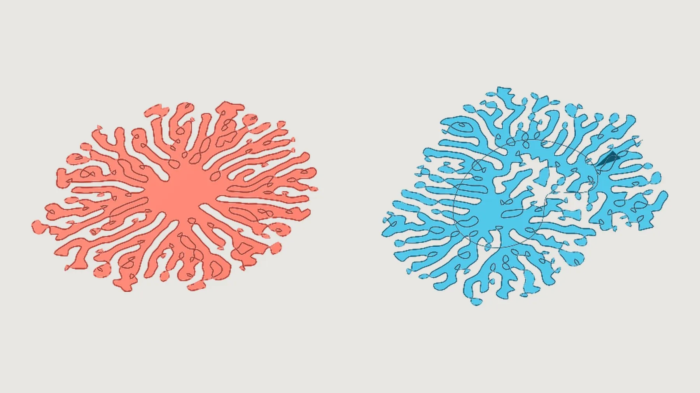

RHINOVIZCOM01 · Growth · Kangaroo
CORAL PAIR
A closed polyline that is not allowed to touch itself, then told to get longer. It has nowhere to go but sideways, so it folds into coral. I ran it from two seeds, a circle and a free curve, and stopped each solve when the branching read well at the scale of a coaster.
INPUT closed polyline → points GOALS Sphere Collide (no self-touch) · Length × growth factor · low damping SOLVER Kangaroo 2, stopped by eye OUTPUT one closed curve → flat cut part
| Material | 3 mm cast acrylic · 1.5 mm aluminium |
|---|---|
| Finish | Gloss edge polish · satin bead-blast + anodise |
| Colour | Tigre Orange · Sky |
| Process | Laser and waterjet straight from the solved curve |